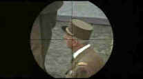

Day of the Jackal/A-,B |
Universal/1973/143m/WS
1.85
|
The Day of the
Jackal from the Frederick Forsyth novel is an outstanding thriller from director
Fred Zinnemann. Set in the early 1960s during the reign of French President Charles
DeGaulle, the political conflict between the government and the extreme right of the
military has come to a head. A number of assassination attempts on De Gaulle have
failed. In desperation, the political outcasts hire a professional assassin to carry out
the hit on De Gaulle. The film chronicles the methodical preparation by the meticulous
Englishman hired to kill French President Charles DeGaulle. Step by step the tension
mounts as the jackal nears the moment of truth when one clean shot will complete the
bargain for his financial freedom. Almost from the outset, French intelligence forces
determine that something is in the works and with swift action, they kidnap an aide to the
rebellious generals and pry from him only a kernel of the assassination possibility. The
government calls in its best Parisian inspector to head up the hunt for the jackal. So we
have procedure from both sides of the fence as the anonymous killer moves ahead of his
pursuers moment by moment.
|

|
DeGaulle in
sight. ©Universal |
Zinnemann's cinematic timing and patience for detail is perfectly
suited to the material. No element of The Day of the Jackal stands out or calls
attention to itself, but the sum of its parts is precision art. The film is quite like the
killer himself, professional, dispassionate, and totally focused.
The mostly British and French cast are terrific in their
anonymity, sacrificing the individuality to the whole of the vision. Edward Fox is the
polished, mild mannered killer. For Fox, killing is simply a job. He's no more than an the
counterpart of an efficient British civil servant, albeit with a taste for fine things. Do
you think Zinnemann took special pleasure in casting a Fox as the jackal? As the
French inspector in charge of the hunt, Michael Lonsdale (A Bond villain alumnus as Drax in
Moonraker.) matches Fox's methodology with Gaelic doggedness. The two protagonist's are
careful never to inject more than necessary into their roles. Credit Zinnemann for
beautiful control over the tone of all the actors.
Though 1.85 widescreen composition is somewhat grainy, colors, sharpness and contrast
ratio are all very good. The mono soundtrack is clean with no hiss. The 143 minute film
stands up to time well. Don't miss it! |
|
The
Feature
Archive has
articles ranging from John
Ford to Blonde
Bimbos, Akira
Kurosawa and Frank
Darabont.

Click on the image above to access The
Heistmasters, a view of the best directors of
the heist.
Check out the Movie
Poster Archive for short bios and
images of Susan Hayward, Kirk Douglas, Katharine
Hepburn and many more. This month's featured star
is Clark
Gable. |
|
Imaging
Science Foundation
The
Imaging Science Foundation promotes proper standards
in home theater viewing. ISF trained technicians
offer monitor calibration services to consumers. The
difference in a properly calibrated monitor
can be astounding. Click on the image to find an ISF
member near you. |
|
HOT
LINKS
DVD
Verdict
They
may be judgmental, but that's the point, isn't it.
Lots of DVD reviews plus news and more
The
Home Theater Forum
Looking
for lively and helpful exchanges on home theater,
DVD, movies. Visit this friendly site and get a
hardy welcome. |
|
Home
Theater Reference Reviewing System
When you read a DVD review it's of utmost importance to
know what equipment is being used to evaluate quality.
Click on the projectors to find out more. |
|